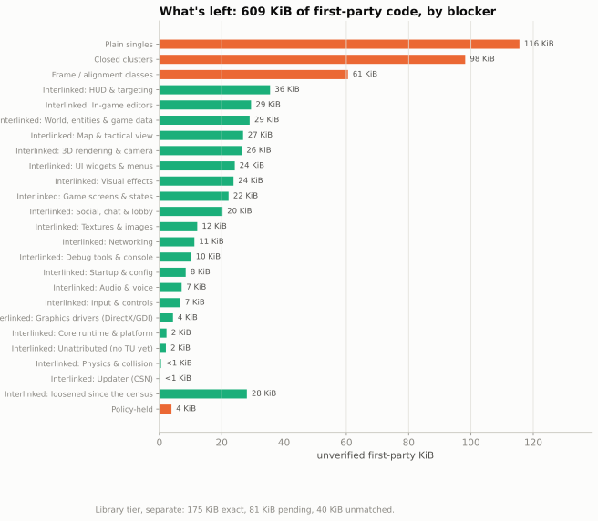

Wulfram II Reconstruction Progress
Progress metrics for a byte-exact reconstruction of the Wulfram II client. Snapshot of 2026-10-07. This site publishes numbers, charts and prose only; the reconstruction itself is not published here.
Progress over time
From 0.27% on 2026-09-11 to 21.42% now, across 233 measured commits.

By subsystem


Table: feature areas
| area | verified % | verified bytes | area bytes |
|---|---|---|---|
| sim.clock | 62.4% | 1,773 | 2,843 |
| core.runtime | 58.5% | 7,031 | 12,024 |
| net.protocol | 56.8% | 10,346 | 18,207 |
| net.session | 46.1% | 6,453 | 14,005 |
| assets.formats | 44.0% | 6,722 | 15,278 |
| math.kernel | 43.5% | 6,800 | 15,641 |
| gfx.backend | 40.2% | 26,840 | 66,828 |
| net.transport | 38.5% | 4,823 | 12,514 |
| input.devices | 37.9% | 5,009 | 13,219 |
| services.updater | 33.9% | 6,687 | 19,712 |
| net.replication | 32.9% | 6,678 | 20,317 |
| sim.physics | 30.8% | 11,958 | 38,806 |
| sim.entities | 30.1% | 8,643 | 28,700 |
| platform.window | 28.9% | 2,144 | 7,418 |
| app.bootstrap | 24.3% | 6,697 | 27,558 |
| audio.backend | 19.4% | 1,010 | 5,212 |
| ui.widgets | 19.3% | 10,764 | 55,790 |
| sim.collision | 18.8% | 7,229 | 38,411 |
| social | 17.9% | 6,373 | 35,515 |
| core.debug | 17.9% | 10,238 | 57,121 |
| view.comms | 17.7% | 926 | 5,244 |
| gfx.texture | 16.0% | 3,831 | 23,996 |
| view.screens | 15.6% | 9,139 | 58,444 |
| audio.runtime | 15.6% | 1,040 | 6,656 |
| view.hud | 15.1% | 10,503 | 69,726 |
| session.lifecycle | 14.7% | 1,707 | 11,580 |
| input.bindings | 13.0% | 1,029 | 7,899 |
| sim.world | 12.9% | 7,256 | 56,378 |
| core.io | 12.6% | 2,504 | 19,930 |
| gfx.raster | 11.6% | 6,469 | 55,913 |
| tools.editors | 10.2% | 5,916 | 57,988 |
| view.tactical | 9.0% | 3,454 | 38,434 |
| view.camera | 8.5% | 549 | 6,436 |
| crypto.hash | 7.4% | 220 | 2,992 |
| view.fx | 4.6% | 1,423 | 30,657 |
| core.concurrency | 3.8% | 1,092 | 28,893 |
| third-party.bzip2 | 0.0% | 0 | 169 |
What's left
The 719.2 KiB of first-party code not yet verified, grouped by what is blocking it. Bucket membership comes from the dependency census of 2026-10-04, minus everything verified since.

Table and definitions
| bucket | bytes | share |
|---|---|---|
| Plain singles | 184,034 | 25.0% |
| Closed clusters | 131,575 | 17.9% |
| Frame / alignment classes | 68,211 | 9.3% |
| Giant tangled component | 348,632 | 47.3% |
| Policy-held | 3,965 | 0.5% |
- Plain singles
- functions with a standard calling convention, no register inputs from callers and no compiler frame-alignment demand; each can be attempted on its own. Includes single-function units the census put on the plain-single track, the census single-candidate list (split into 'worth a singles wave' and the rest), and a residual of first-party bytes that the census did not place in any unit (large, x87-heavy, complex exception handling or otherwise outside its filters).
- Closed clusters
- groups of functions that whole-program optimisation tied together through custom register conventions, whose closure is complete (every member's callers are inside the group). Grouped by size class: number of members and bytes.
- Frame / alignment classes
- single functions or groups whose stack-frame shape (8- or 64-byte realignment, padding slots) depends on callers or callees; reproducing them needs the right neighbours compiled together. Includes groups whose frame chain went beyond the census pull limit.
- Giant tangled component
- one very large connected component (over a thousand functions) where register-convention and frame dependencies chain together; it cannot be cut into small units under current rules.
- Policy-held
- work that is held by a process rule rather than by difficulty: units reserved for another work lane, units that need an ownership ruling on a calling-convention contradiction, and results that are proven but not countable under the current counting rules.
Work waves
Each wave is a batch of attempts. "Counted now" is the part of the wave that is in today's verified total.

Table: waves
| wave | result date | functions tried | bytes tried | bytes counted now |
|---|---|---|---|---|
| cluster wave 6 | 2026-09-30 | 44 | 10,199 | 4,321 |
| round 47 | 2026-10-01 | 14 | 4,001 | 96 |
| round 49 | 2026-10-04 | 49 | 12,987 | 1,747 |
| round 50 | 2026-10-04 | 34 | 8,990 | 2,731 |
| round 51 | 2026-10-04 | 20 | 3,432 | 2,541 |
| round 52 | 2026-10-04 | 20 | 2,245 | 1,513 |
| round 53 | 2026-10-04 | 20 | 1,488 | 909 |
| round 54 | 2026-10-04 | 20 | 2,181 | 1,387 |
| round 55 | 2026-10-04 | 20 | 1,980 | 1,228 |
| round 56 | 2026-10-04 | 20 | 2,424 | 1,302 |
| round 57 | 2026-10-04 | 20 | 3,072 | 1,767 |
| round 58 | 2026-10-04 | 20 | 6,530 | 1,595 |
| round 59 | 2026-10-04 | 20 | 3,004 | 1,479 |
| round 60 | 2026-10-04 | 20 | 2,819 | 1,651 |
| round 61 | 2026-10-05 | 20 | 4,553 | 914 |
| round 62 | 2026-10-05 | 19 | 2,429 | 1,057 |
| cluster wave 7 | 2026-10-06 | 49 | 6,887 | 1,279 |
| cluster wave 8 | 2026-10-06 | 56 | 20,042 | 0 |
| cluster wave 10 | 2026-10-07 | 59 | 12,901 | 0 |
| cluster wave 9 | 2026-10-07 | 73 | 21,447 | 26 |
What the numbers mean
Byte-exact means a function's reconstructed source, compiled with the same period compiler (Visual C++ 2005) and flags, produces exactly the machine code of the original program, with every address reference checked and a deliberate mutation shown to break the match. A small number of functions are instead counted on a differential-execution test against the original.
Campaign verified bytes is the headline: verified bytes over all first-party target bytes. First-party excluding library rows moves rows that turned out to be library code out of the denominator. Library-exact measures the statically linked libraries (C runtime, Speex, bzip2, libjpeg) on their own line; it is never added to the first-party figure. A draft-link tier exists in the private workspace but is provisional and is not counted anywhere here.
Data: history.json, current.json, remaining.json, waves.json. Text and data CC BY 4.0.